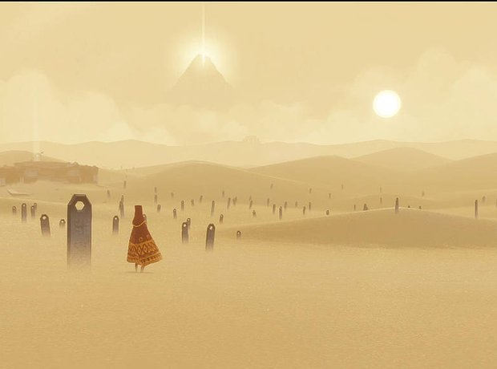
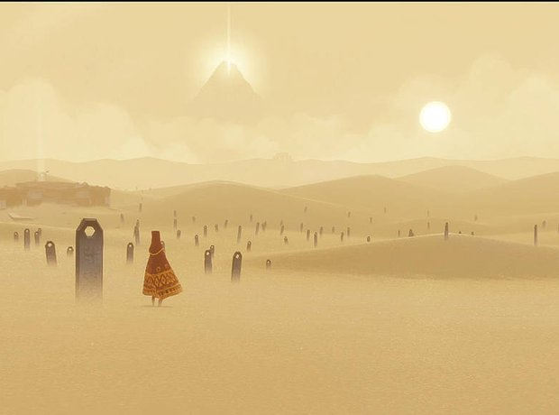

Since the late 70s, video game music has engaged and entertained players. The genre is fresh and excitingly experimental. Iconic music sticks in peoples’ heads and ambient sounds immerse players in new worlds. The early chiptune sounds of games like Tetris or The Legend of Zelda are instantly recognizable by people all over the world.
Initially soundtracks were limited to simple melodic pieces created using early sound synthesizer technology. Video game soundtracks have grown to the same complexity as film scores, allowing for a great deal of creative freedom. While simple synthesizer pieces are still common, soundtracks now include full orchestral pieces as well as contemporary music and are sold as albums and performed in concert halls.
Video game music has been an integral part of many captivating games and has helped create many special childhood memories.

 
